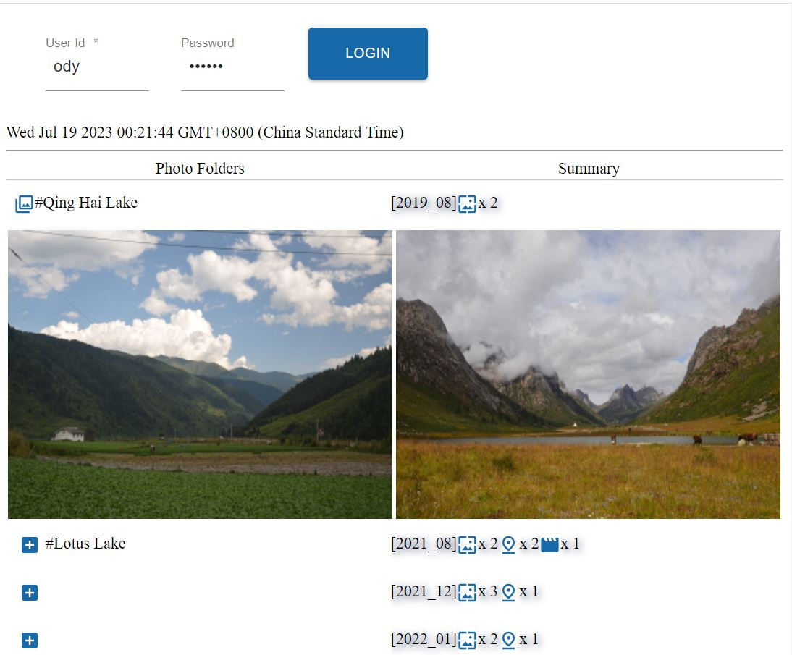
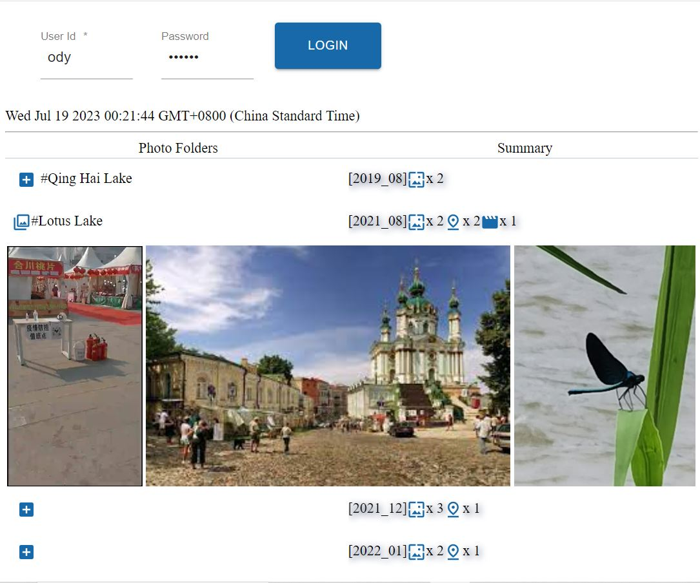
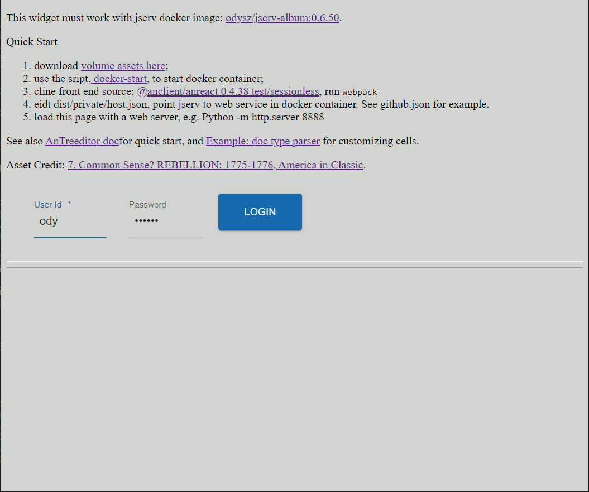
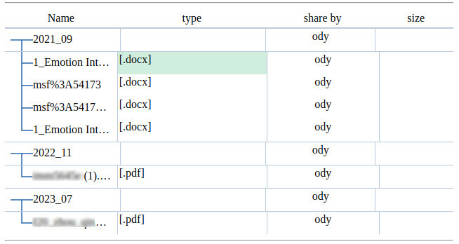

Trees
In the js/anreact/test/sessionless folder,
npm i
webpack
Test AnTreeditor
Test page:
js/anreact/test/sessionless/dist/widgets.html
This front page works with jserv-sandbox. For @anclient/anreact v0.4.36, a docker image, jsandbox:treeditor, for testing AnTreeditor is published.
To install Docker, start the container with scripts:
./docker-start
This will pull a docker image, odysz/jsandbox:treeditor, into a local container.
Start VS Code, load dist/widgets.html with Anprism. Following is what is expected:
  {kind=link}
{kind=link}
{kind=link}
{kind=link}
To deploy docker container behind a Nginx proxy for https protocol, see Tip: deploy docker as Nginx backend server working as a https domain
Customize Tree Grid
See Anclient/examples/example.js/album/app.tsx, function rander().typeParser().
{kind=link}
To Customize cells in AnTreegrid (also AnTreeditor), feed the control with a formatter:
<AnTreegrid
pk={''} onSelectChange={()=>{}}
tier={this.albumtier}
columns={[
{ type: 'iconame', field: 'pname', label: L('Name'),
grid: {sm: 6, md: 5} },
{ type: 'text', field: 'mime', label: L('type'),
colFormatter: typeParser, // Customize a cell
grid: {xs: 1} },
{ type: 'text', field: 'shareby', label: L('share by'),
grid: {xs: false, sm: 3, md: 2} },
{ type: 'text', field: 'img', label: L('size'), colFormatter: folderSum,
grid: {xs: false, sm: 2, md: 2}, thFormatter: this.switchDocMedias }
]}
/>
/**
* In @anclient/anreact/src/react/anreact.tsx:
* export interface ClassNames {[c: string]: string};
* export interface Media { isLg?: boolean; isMd?: boolean; isSm?: boolean; isXs?: boolean; isXl?: boolean; };
*
* Generate an JSX.Element for rendering a grid cell.
*/
function typeParser(c: AnTreegridCol, n: AnTreeNode,
opt: {classes: ClassNames, media: Media}) {
if (n.node.children?.length as number > 0)
return;
else
return that.docIcon.typeParser(c, n, opt);
}
The typeParser() implements the API of anreact/widgets/Treegrid#colFormatter().